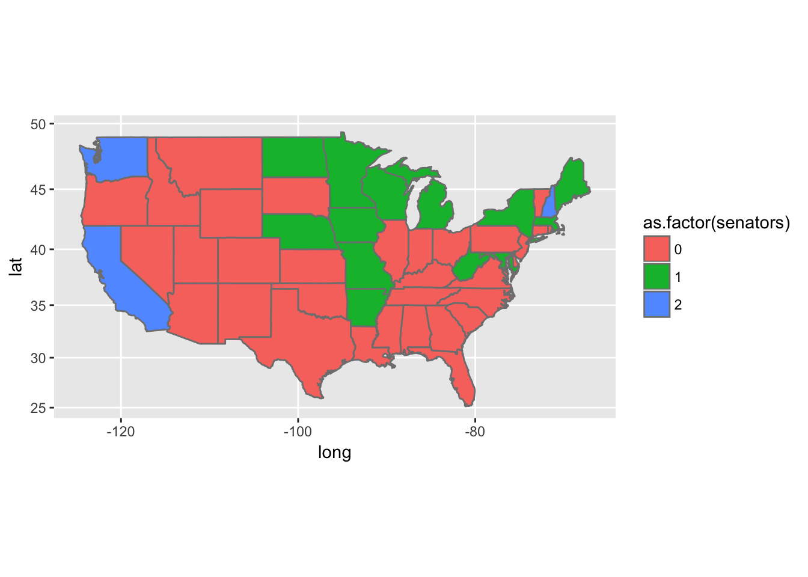
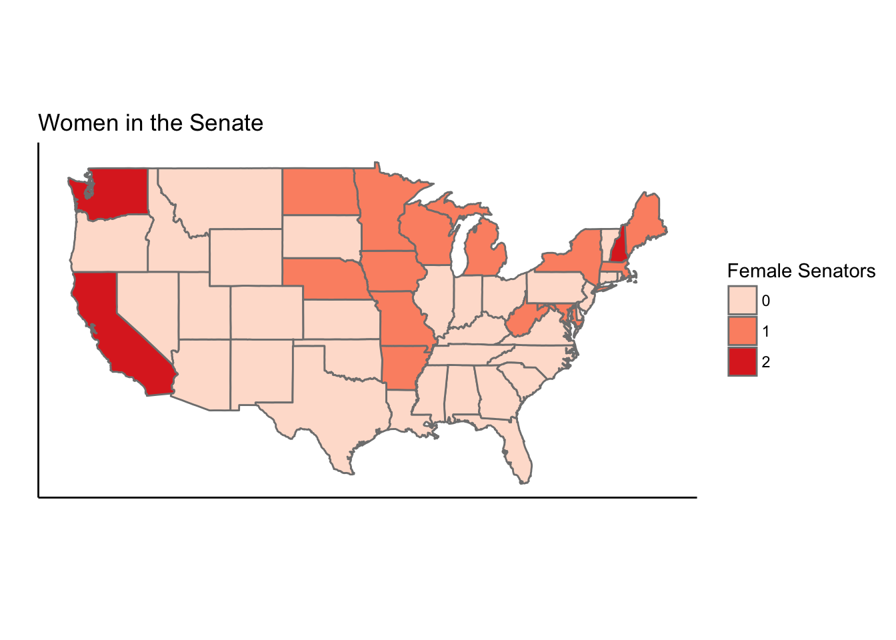
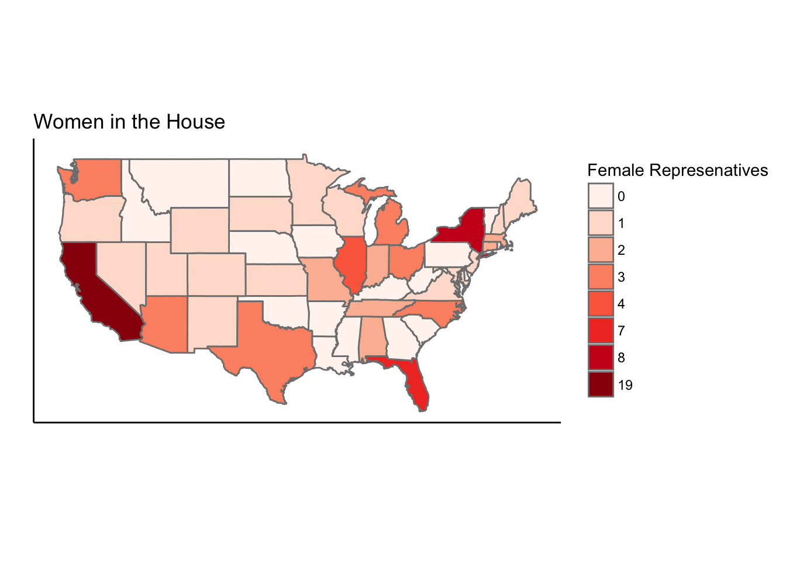
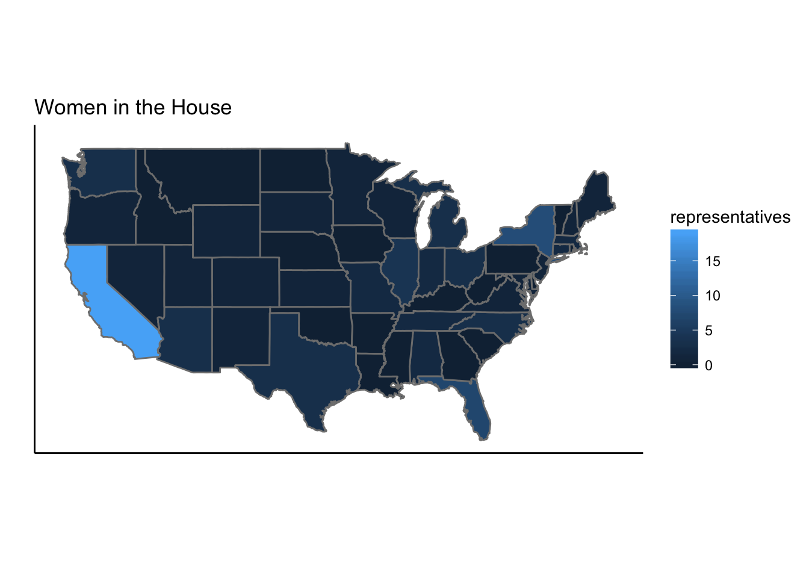
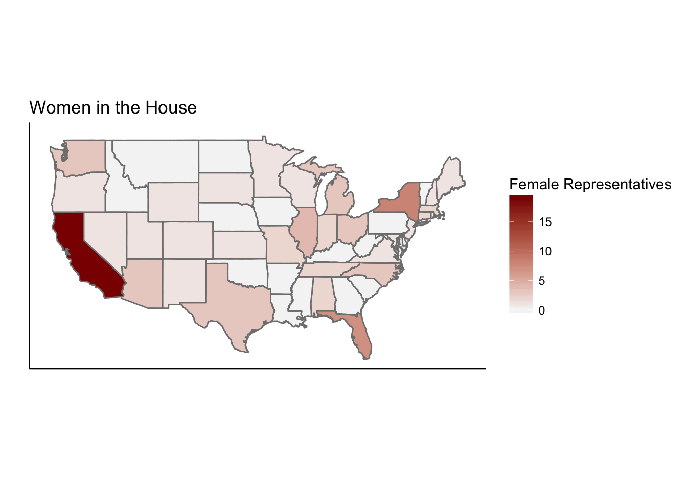
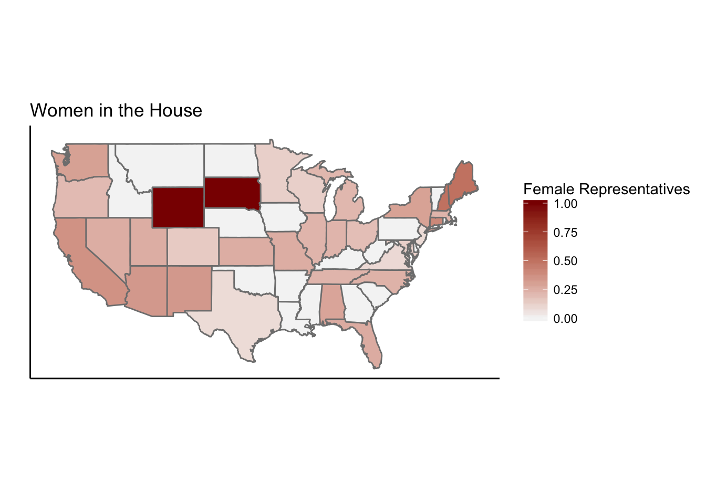
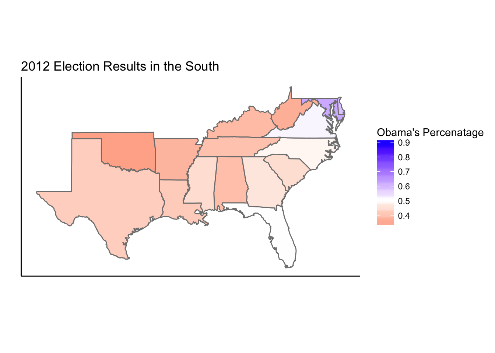

library(tidyverse)
all_states <- map_data("state")
# load data and merge by region
congress <- read.csv("womenincongress.csv")
names(congress)[2] <- "region"
state_data <- merge(all_states, congress, by="region")
# beginning plot of number of female senators as categorical
senatePlot <- ggplot()+
geom_polygon(data=state_data,aes(x=long, y=lat, group = group, fill=as.factor(senators)),color="grey50")+
coord_map()
senatePlot
# change color sceheme, add title, get rid of unnecessary background and ticks
senatePlot <- senatePlot+coord_map()+scale_fill_brewer(name="Female Senators", type = "seq", palette = "Reds")+
labs(x="", y= "", title="Women in the Senate")+
theme_classic() +
theme(axis.ticks.y = element_blank(),axis.text.y = element_blank(), axis.ticks.x = element_blank(),axis.text.x = element_blank())
senatePlot
housePlot <- ggplot()+
geom_polygon(data=state_data,aes(x=long, y=lat, group = group, fill=as.factor(representatives)),color="grey50")+
coord_map()+
scale_fill_brewer(name="Female Represenatives",type="seq",palette="Reds")+
labs(x="",y="",title="Women in the House")+theme_classic()+
theme(axis.ticks.y = element_blank(),axis.text.y = element_blank(), axis.ticks.x = element_blank(),axis.text.x = element_blank())
housePlot
housePlot <- ggplot()+
geom_polygon(data=state_data,aes(x=long, y=lat, group = group, fill=representatives),color="grey50")+
coord_map()+
labs(x="",y="",title="Women in the House")+theme_classic()+
theme(axis.ticks.y = element_blank(),axis.text.y = element_blank(), axis.ticks.x = element_blank(),axis.text.x = element_blank())
housePlot
housePlot <- housePlot + scale_fill_gradient(name="Female Representatives",low="whitesmoke",high="darkred")
housePlot
state_data <- mutate(state_data, repProp = (state_data$representatives/state_data$total))
housePlot <- ggplot()+
geom_polygon(data=state_data,aes(x=long, y=lat, group = group, fill=repProp),color="grey50")+
coord_map()+
labs(x="",y="",title="Women in the House")+theme_classic()+
theme(axis.ticks.y = element_blank(),axis.text.y = element_blank(), axis.ticks.x = element_blank(),axis.text.x = element_blank())+
scale_fill_gradient(name="Female Representatives",low="whitesmoke",high="darkred")
housePlot
# Load data
electionData <- read.csv("2012.csv")
names(electionData)[1] <- "region"
# Make the data useful
electionData$ObamaPerc <- electionData$ObamaVotes/(electionData$ObamaVotes+electionData$RomneyVotes+electionData$JohnsonVotes+electionData$SteinVotes)
electionData$RomneyPerc <- electionData$RomneyVotes/(electionData$ObamaVotes+electionData$RomneyVotes+electionData$JohnsonVotes+electionData$SteinVotes)
electionData <- merge(all_states,electionData,by="region")
south <- filter(electionData, region %in% c("maryland", "west virginia", "virginia", "delaware", "kentucky", "arkansas", "oklahoma", "texas", "louisiana", "tennessee", "north carolina", "district of columbia", "mississippi", "alabama", "georgia", "south carolina", "florida"))
southElectionPlot <- ggplot()+
geom_polygon(data=south,aes(x=long, y=lat, group = group, fill=ObamaPerc),color="grey50")+
coord_map()+
labs(x="",y="",title="2012 Election Results in the South")+
theme_classic()+
theme(axis.ticks.y = element_blank(),axis.text.y = element_blank(), axis.ticks.x = element_blank(),axis.text.x = element_blank()) +
scale_fill_gradient2(name="Obama's Percenatage",low="red",mid="white",high="blue",midpoint=.5)
southElectionPlot